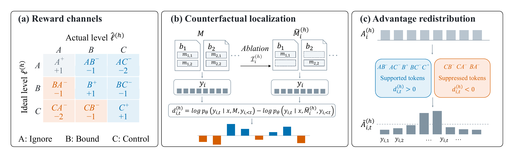
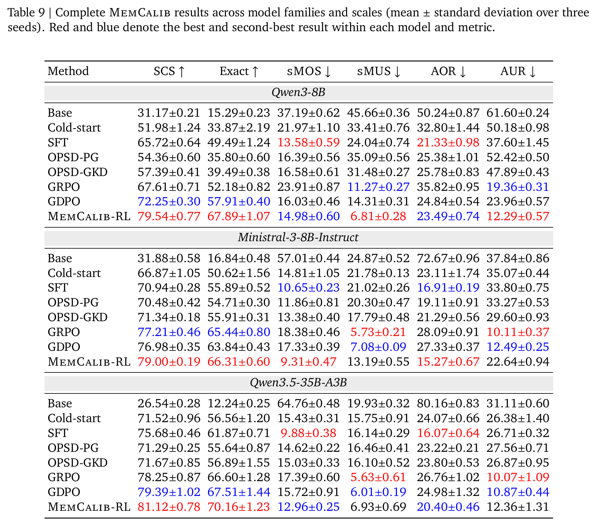

MemCalib: Benchmarking and Optimizing
Memory Use in LLM Agents
Abstract
The effectiveness of agent memory ultimately depends on whether the underlying LLM gives each memory in context an appropriate degree of influence over its response. Yet this capability has remained largely overlooked. To assess this capability, we introduce MemCalib, a benchmark grounded in realistic memory-system scenarios for evaluating memory use and advancing optimization algorithms. Results on the MemCalib test set reveal that frontier open- and closed-source models struggle to use memory appropriately. They frequently over-use or under-use memory rather than matching each proposition's actual use to its target level, leading to biased, low-quality responses. Experiments with common post-training algorithms, including group relative policy optimization and on-policy self-distillation, further reveal a clear directional skew: trained models improve in one direction while deteriorating in the other. We therefore propose MemCalib-RL, an ordered bidirectional counterfactual credit-assignment algorithm that separates over- and under-use signals and localizes their credit to response tokens through exact atom ablation. Results across model families and scales (Qwen3-8B, Ministral-3-8B-Instruct, and Qwen3.5-35B-A3B) show that MemCalib-RL achieves the best overall performance while better balancing over-use and under-use, with gains generalizing beyond MemCalib in external benchmark evaluation. Further experiments support its design choices and robustness and provide insight into its training dynamics.
MemCalib Benchmark
MemCalib contains 15,000 examples and 234,220 atomic propositions across health, general assistance, and coding. Each example pairs a query with composite memory blocks. The constituent propositions are annotated with ideal use levels and atom-specific rubrics.
For a given query, each memory atom has one of three ideal use levels:
- A Ignore
- Leaves no answer-specific footprint.
- B Bound
- Provides bounded local support.
- C Control
- Determines a material conclusion, constraint, or recommendation.
The dataset comprises 7,500 health, 3,750 general-assistance, and 3,750 coding examples, split into 13,500 training and 1,500 held-out test examples. The paper reserves 1,500 training examples for validation.
MemCalib-RL
Ordered Bidirectional Credit Assignment

MemCalib-RL separates the nine ideal–actual use transitions into distinct reward channels. Exact atom ablation compares token log-likelihoods for the same response under full and ablated memories. This bidirectional counterfactual evidence redistributes each channel's advantage across response tokens while preserving its response-level mean.
Experimental Results
MemCalib-RL achieves the highest Sample Calibration Score (SCS) and Exact Calibration across all three models. Relative to Cold-start, it reduces both over-use and under-use across model families and scales.

BibTeX
@misc{cao2026memcalib,
title = {MemCalib: Benchmarking and Optimizing Memory Use in LLM Agents},
author = {Ruike Cao and Fanyu Zhao and Fugen Yao and Liang Dong and
Jian Xu and Yifei Zhao and Han Zhang and Li Xiao},
year = {2026},
eprint = {2609.24259},
archivePrefix = {arXiv},
primaryClass = {cs.LG},
url = {https://arxiv.org/abs/2609.24259}
}